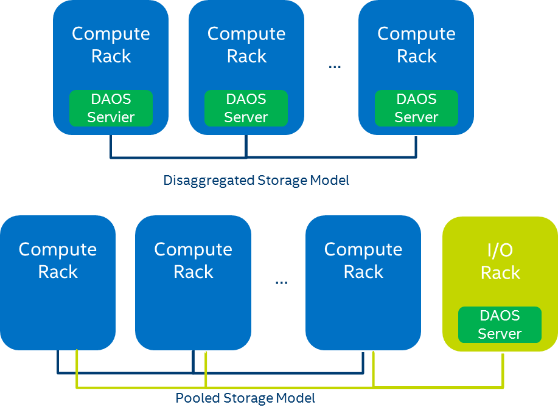

DAOS Architecture¶
DAOS is an open-source software-defined scale-out object store that provides high bandwidth and high IOPS storage containers to applications and enables next-generation data-centric workflows combining simulation, data analytics, and machine learning.
Unlike the traditional storage stacks that were primarily designed for rotating media, DAOS is architected from the ground up to exploit new NVM technologies and is extremely lightweight since it operates End-to-End (E2E) in user space with full OS bypass. DAOS offers a shift away from an I/O model designed for block-based and high-latency storage to one that inherently supports fine-grained data access and unlocks the performance of the next-generation storage technologies.
Unlike traditional Burst Buffers, DAOS is a high-performant independent and fault-tolerant storage tier that does not rely on a third-party tier to manage metadata and data resilience.
DAOS Features¶
DAOS relies on OFI for low-latency communications and stores data on both storage-class memory and NVMe storage. DAOS presents a native key-array-value storage interface that offers a unified storage model over which domain-specific data models are ported, such as HDF5, MPI-IO, and Apache Arrow. A POSIX I/O emulation layer implementing files and directories over the native DAOS API is also available.
DAOS I/O operations are logged and then inserted into a persistent index maintained in SCM. Each I/O is tagged with a particular timestamp called epoch and is associated with a particular version of the dataset. No read-modify-write operations are performed internally. Write operations are non-destructive and not sensitive to alignment. Upon read request, the DAOS service walks through the persistent index and creates a complex scatter-gather Remote Direct Memory Access (RDMA) descriptor to reconstruct the data at the requested version directly in the buffer provided by the application.
The SCM storage is memory-mapped directly into the address space of the DAOS service that manages the persistent index via direct load/store. Depending on the I/O characteristics, the DAOS service can decide to store the I/O in either SCM or NVMe storage. As represented in Figure 2‑1, latency-sensitive I/Os, like application metadata and byte-granular data, will typically be stored in the former, whereas checkpoints and bulk data will be stored in the latter. This approach allows DAOS to deliver the raw NVMe bandwidth for bulk data by streaming the data to NVMe storage and maintaining internal metadata index in SCM. The Persistent Memory Development Kit (PMDK)1 allows managing transactional access to SCM and the Storage Performance Development Kit (SPDK)2 enables user-space I/O to NVMe devices.
 Figure 2‑1. DAOS Storage
DAOS aims at delivering:
-
High throughput and IOPS at arbitrary alignment and size
-
Fine-grained I/O operations with true zero-copy I/O to SCM
-
Support for massively distributed NVM storage via scalable collective communications across the storage servers
-
Non-blocking data and metadata operations to allow I/O and computation to overlap
-
Advanced data placement taking into account fault domains
-
Software-managed redundancy supporting both replication and erasure code with an online rebuild
-
End-to-end data integrity
-
Scalable distributed transactions with guaranteed data consistency and automated recovery
-
Dataset snapshot
-
Security framework to manage access control to storage pools
-
Software-defined storage management to provision, configure, modify and monitor storage pools over COTS hardware
-
Native support for Hierarchical Data Format (HDF)5, MPI-IO and POSIX namespace over the DAOS data model
-
Tools for disaster recovery
-
Seamless integration with the Lustre parallel filesystem
-
Mover agent to migrate datasets among DAOS pools and from parallel filesystems to DAOS and vice versa
DAOS Components¶
A data center may have hundreds of thousands of compute nodes interconnected via a scalable high-performance fabric, where all, or a subset of the nodes called storage nodes, have direct access to NVM storage. A DAOS installation involves several components that can be either collocated or distributed.
DAOS Target, Server and System¶
The DAOS server is a multi-tenant daemon running on a Linux instance (i.e. natively on the physical node or in a VM or container) of each storage node and exporting through the network the locally-attached NVM storage. It listens to a management port, addressed by an IP address and a TCP port number, plus one or more fabric endpoints, addressed by network URIs. The DAOS server is configured through a YAML file and can be integrated with different daemon management or orchestration frameworks (e.g., a systemd script, a Kubernetes service or even via a parallel launcher like pdsh or srun).
A DAOS system is identified by a system name and consists of a set of DAOS servers connected to the same fabric. Membership of the DAOS servers is recorded into the system map that assigns a unique integer rank to each server. Two different systems comprise two disjoint sets of servers and do not coordinate with each other.
Inside a DAOS server, the storage is statically partitioned across multiple targets to optimize concurrency. To avoid contention, each target has its private storage, own pool of service threads and dedicated network context that can be directly addressed over the fabric independently of the other targets hosted on the same storage node. A target is typically associated with a single-ported SCM module and NVMe SSD attached to a single storage node. Moreover, a target does not implement any internal data protection mechanism against storage media failure. As a result, a target is a single point of failure. A dynamic state is associated with each target and is set to either up and running, or down and not available.
A target is the unit of performance. Hardware components associated with the target, such as the backend storage medium, the server, and the network, have limited capability and capacity.
The number of targets exported by a DAOS server instance is configurable and depends on the underlying hardware (i.e., the number of SCM modules, CPUs, NVMe SSDs ...). A target is the unit of fault.
Storage API, Application Interface and Tools¶
Applications, users, and administrators can interact with a DAOS system through two different client APIs. The management API offers the ability to administrate a DAOS system. It is intended to be integrated with different vendor-specific storage management or open-source orchestration frameworks. A CLI tool is built over the DAOS management API. On the other hand, the DAOS library (i.e., libdaos) implements the DAOS storage model and is primarily targeted at application and I/O middleware developers who want to store datasets in a DAOS system. User utilities are also built over the API to allow users to manage datasets from a CLI.
Applications can access datasets stored in DAOS either directly through the native DAOS API or an I/O middleware libraries (e.g. POSIX emulation, MPI-IO, HDF5) or frameworks (e.g., Spark, TensorFlow) already integrated with the native DAOS storage model.
Agent¶
The DAOS agent is a daemon residing on the client node that interacts with the DAOS library to authenticate the application process. It is a trusted entity that can sign the DAOS Client credentials using certificates. The agent can support different authentication frameworks and uses a Unix Domain Socket to communicate with the client library.
Storage Model¶
A DAOS pool is a storage reservation distributed across a collection of targets. The actual space allocated to the pool on each target is called a pool shard. The total space allocated to a pool is decided at creation time and can be expanded over time by resizing all the pool shards (within the limit of the storage capacity dedicated to each target) or by spanning more targets (i.e., adding more pool shards). A pool offers storage virtualization and is the unit of provisioning and isolation. DAOS pools cannot span across multiple systems.
A pool can host multiple transactional object store called DAOS containers. Each container is a private object address space, which can be modified transactional and independently of the other containers stored in the same pool. A container is the unit of snapshot and data management. DAOS objects belonging to a container can be distributed across any target of the pool for both performance and resilience and can be accessed through different APIs to represent structured, semi-structured and unstructured data efficiently.
Figure 2‑2 illustrates the different DAOS abstractions.

Figure 2‑2. Example of four Storage Nodes, eight DAOS Targets, and three DAOS Pools
Table 2‑1 shows the targeted level of scalability for each DAOS abstraction.
Table 2‑1. DAOS Scalability
| DAOS Concept | Component Order of Magnitude Limit |
|---|---|
| System | 102 Pools (hundreds) |
| Pool | 102 Containers (hundreds) |
| Container | 109 Objects (billions) |
DAOS Pool¶
A Pool is identified by a unique UUID and maintains target memberships in the pool map stored in persistent memory. The pool map not only records the list of active targets, it also contains the storage topology under the form of a tree that is used to identify targets sharing common hardware components. For instance, the first level of the tree can represent targets sharing the same motherboard, and then the second level can represent all motherboards sharing the same rack and finally the third level can represent all racks in the same cage. This framework effectively represents hierarchical fault domains, which are then used to avoid placing redundant data on targets subject to correlated failures. At any point in time, new targets can be added to the pool map, and failed ones can be excluded. Moreover, the pool map is fully versioned, which effectively assigns a unique sequence to each modification of the map, more particularly for failed node removal.
A pool shard is a reservation of NVM storage (i.e., SCM optionally combined with a pre-allocated space on NVMe storage) on a specific target. It has a fixed capacity and fails operations when full. Current space usage can be queried at any time and reports the total amount of bytes used by any data type stored in the pool shard. Space consumed on the different type of storage is reported separately.
Upon target failure and exclusion from the pool map, data redundancy inside the pool is automatically restored while the pool remains online. Rebuild progress is recorded regularly in special logs in the pool stored in persistent memory to address cascading failures. When new targets are added, data is automatically migrated to the newly added targets to redistribute space usage equally among all the members. This process is known as space rebalancing and uses dedicated persistent logs as well to support interruption and restart. A pool is a set of targets spread across different storage nodes over which data and metadata are distributed to achieve horizontal scalability, and replicated or erasure-coded to ensure durability and availability.
When creating a pool, a set of system properties must be defined to configure the different features supported by the pool. In addition, the user can define their own attributes that will be stored persistently.
A pool is only accessible to authenticated and authorized applications. Multiple security frameworks could be supported, from NFSv4 access control lists to third party-based authentication (such as Kerberos). Security is enforced when connecting to the pool. Upon successful connection to the pool, a connection context is returned to the application process.
A pool stores many different sorts of persistent metadata, such as the pool map, authentication, and authorization information, user attributes, properties, and rebuild logs. Such metadata are critical and require the highest level of resiliency. Therefore, the pool metadata are replicated on a few nodes from distinct high-level fault domains. For very large configurations with hundreds of thousands of storage nodes, only a very small fraction of those nodes (in the order of tens) run the pool metadata service. With a limited number of storage nodes, DAOS can afford to rely on a consensus algorithm to reach agreement and to guarantee consistency in the presence of faults and to avoid split-brain syndrome.
DAOS Container¶
A container represents an object address space inside a pool and is identified by a UUID. Applications (i.e., directly or via I/O middleware, domain-specific data format, big data or AI frameworks) store all related datasets into a container which is the unit of storage management for the user.
Like pools, containers can store user attributes and a set of properties must be passed at container creation time to configure different features like checksums.
Objects in a container are identified by a unique 128-bit object address and may have different schemas for data distribution and redundancy over targets. Dynamic or static striping, replication or erasure code are some parameters required to define the object schema. The object class defines common schema attributes for a set of objects. Each object class is assigned a unique identifier and is associated with a given schema at the pool level. A new object class can be defined at any time with a configurable schema, which is then immutable after creation, or at least until all objects belonging to the class have been destroyed. For convenience, several object classes expected to be the most commonly used will be predefined by default when the pool is created, as shown in Table 2‑2.
Table 2‑2. Sample of Pre-defined Object Classes
| Object Class (RW = read/write, RM = read-mostly | Redundancy | Metadata in OIT, (SC = stripe count, RC = replica count, PC = parity count, TGT = target |
|---|---|---|
| Small size & RW | Replication | No (static SCxRC, e.g. 1x4) |
| Small size & RM | Erasure code | No (static SC+PC, e.g. 4+2) |
| Large size & RW | Replication | No (static SCxRC over max #targets) |
| Large size & RM | Erasure code | No (static SCx(SC+PC) w/ max #TGT) |
| Unknown size & RW | Replication | SCxRC (e.g. 1x4 initially and grows) |
| Unknown size & RM | Erasure code | SC+PC (e.g. 4+2 initially and grows) |
A container is the unit of transaction and snapshot. Container metadata (i.e. list of snapshots, container open handles, object class, user attributes, properties, etc.) are stored in persistent memory and maintained by a dedicated container metadata service that either uses the same replicated engine as the parent metadata pool service, or has its own engine.
DAOS Object¶
To avoid scaling problems and overhead common to a traditional storage system, DAOS objects are intentionally simple. No default object metadata beyond the type and schema are provided. This means that the system does not maintain time, size, owner, permissions or even track openers. To achieve high availability and horizontal scalability, many object schemas (replication/erasure code, static/dynamic striping, and others) are provided. The schema framework is flexible and easily expandable to allow for new custom schema types in the future. The layout is generated algorithmically on an object open from the object identifier and the pool map. End-to-end integrity is assured by protecting object data with checksums during network transfer and storage.
A DAOS object can be accessed through different native interfaces exported by libdaos: multi-level key-array, key-value or array APIs that allows representing efficiently structured, semi-structured or unstructured data.